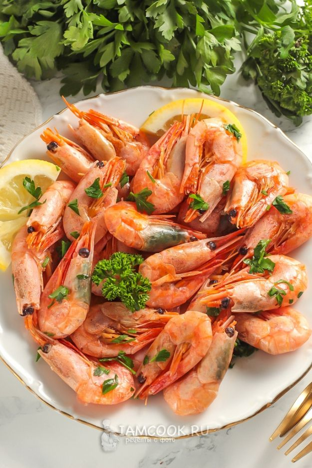
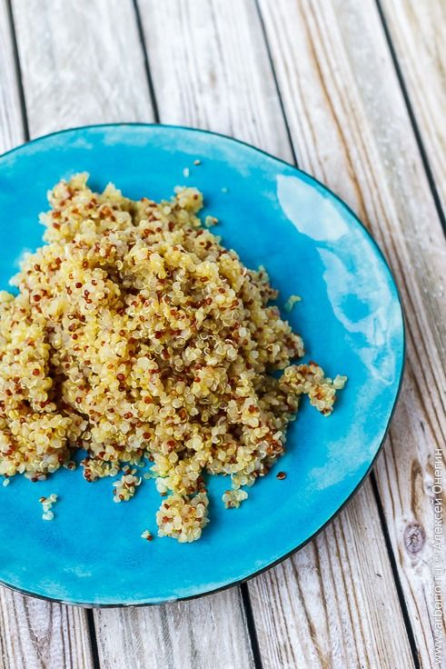
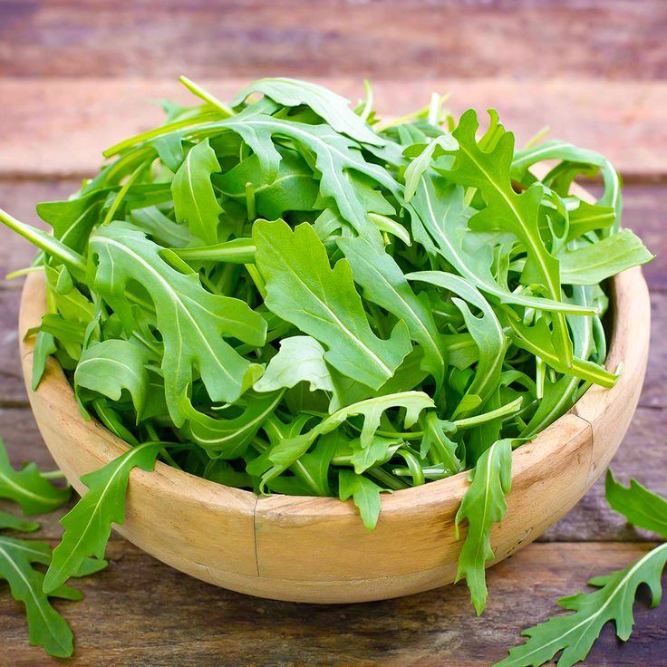
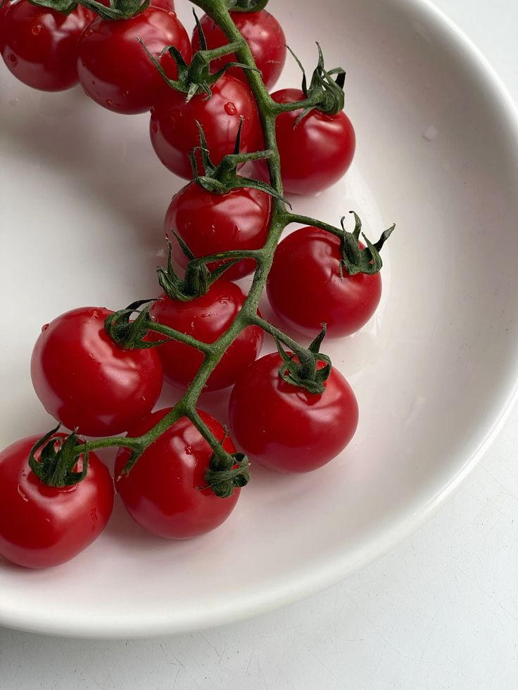
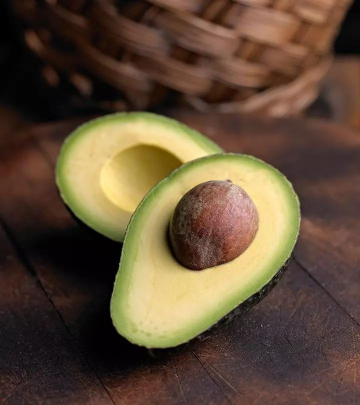
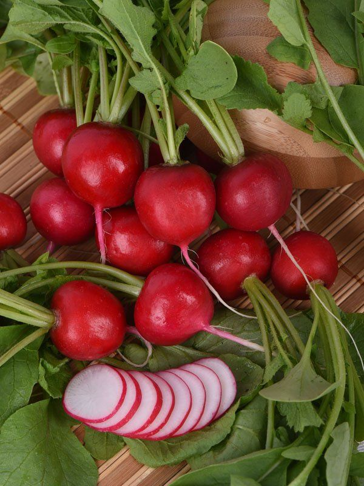
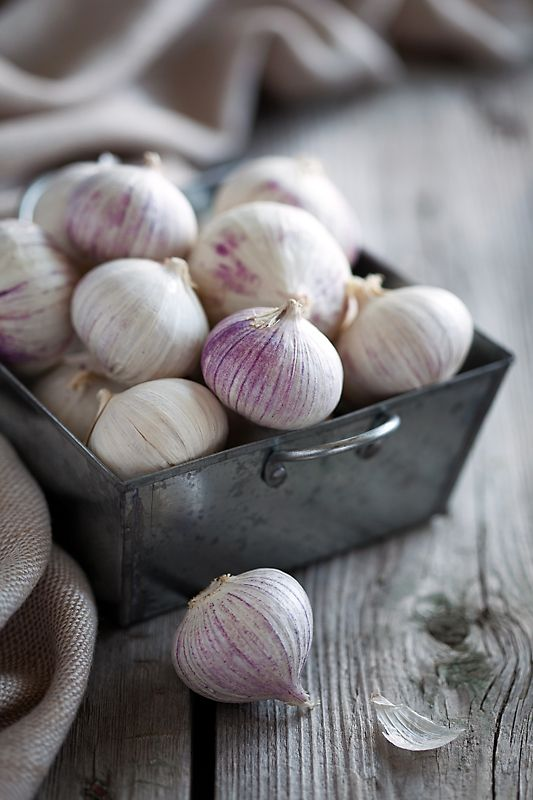
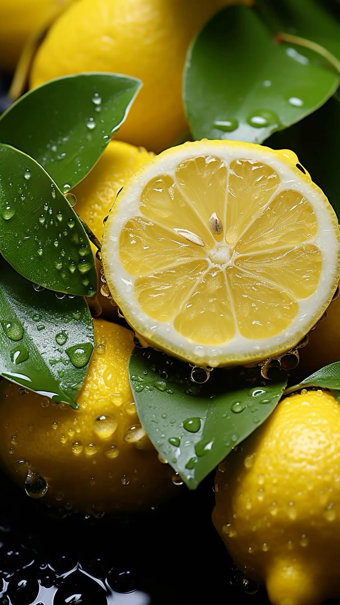

Содержание
Ингредиенты
| Продукт | Количество | КБЖУ | Фото |
|---|---|---|---|
| Креветки | 300 г | K:130 Б:30г Ж:0,5г У:0г |  |
| Киноа | 100 г | K:390 Б:14г Ж:7г У:56г |  |
| Микс листьев салата | 1 уп | K:20 Б:2,1г Ж:0,3г У:1,4г |  |
| Томаты черри | 8 шт | K:15 Б:0,8г Ж:0,1г У:2,8г |  |
| Авокадо | 1 шт | K:160 Б:2г Ж:14,7г У:1,8г |  |
| Редис | 2 шт | K:20 Б:1,2г Ж:0,1г У:3,4г |  |
| Чеснок | 1 уп | K:149 Б:6,4г Ж:0,5г У:31г |  |
| Соус кунжутный | 2 ст. ложки | K:411 Б:2,1г Ж:38,5г У:13,6г |  |
| Лимонный сок | 1 ч. ложка | K:34 Б:0,9г Ж:0,1г У:3г |  |
| Растительное масло | 1 ст. ложка | K:899 Б:0г Ж:99,9г У:0г |  |
Приготовление
- Сварите киноа. Для этого вскипятите воду в пропорции 2:1 и засыпьте туда киноа. Варите в теечение примерно 15 минут на слабом огне.
- Почистите и мелко нарежьте чеснок, обжаривайте на оливковом масле 1 минуту. Далее добавьте креветки и обжаривайте их до готовности примерно по 2 минуты с каждой стороны.
- Томаты разрежьте на половинки. Редис – тонкими кольцами.
- Авокадо почистите и разрежьте пополам, удалите косточку и половинку порежьте тонкими слайсами. Полейте соком лимона.
- Киноа заправьте кунжутным соусом.
- Микс листьев салата смешайте с томатами и редисом. Посолите по вкусу и заправьте оливковым маслом.
- В тарелку боул на дно выложите заправленный киноа. Далее по кругу выложите креветки, слайсы авокадо и микс из салата и овощей.
- Перед подачей блюдо можно украсить с помощью микса семечек и долек лиомна.
Приятного аппетита!